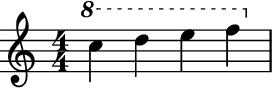
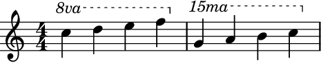
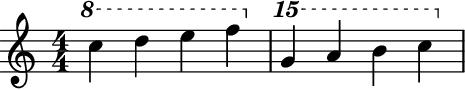
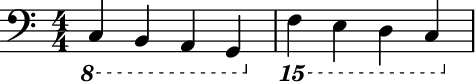

ottava¶
-
auxjad.ottava(argument: Union[abjad.core.Component.Component, abjad.core.Selection.Selection], start_ottava: Union[int, abjad.indicators.Ottava.Ottava, auxjad.indicators.NumericOttava.NumericOttava] = 1, stop_ottava: Union[int, abjad.indicators.Ottava.Ottava, auxjad.indicators.NumericOttava.NumericOttava] = 0, *, numeric_ottava: bool = False, selector: abjad.utilities.Expression.Expression = abjad.select().leaves(), tag: abjad.system.Tag.Tag = None) → None¶ Attaches ottava indicators.
- Basic usage:
Basic usage is identical to
abjad.ottava():>>> staff = abjad.Staff(r"c'''4 d'''4 e'''4 f'''4") >>> auxjad.ottava(staff[:]) >>> abjad.f(staff) \new Staff { \ottava 1 c'''4 d'''4 e'''4 f'''4 \ottava 0 }

Note
Auxjad automatically replaces its built-in
abjad.ottava()with this function. Therefore it can be used either asauxjad.ottava()orabjad.ottava(), as shown below:>>> staff1 = abjad.Staff(r"c'''4 d'''4 e'''4 f'''4") >>> staff2 = abjad.Staff(r"c'''4 d'''4 e'''4 f'''4") >>> auxjad.ottava(staff1[:]) >>> abjad.ottava(staff2[:]) >>> selections = [staff1[:], staff2[:]] >>> auxjad.inspect(selections).selections_are_identical() True
- Arguments:
Second and third positional arguments can be
int,abjad.Ottava, orauxjad.NumericOttava:>>> staff = abjad.Staff( ... r"c'''4 d'''4 e'''4 f'''4 g'''4 a'''4 b'''4 c''''4" ... ) >>> auxjad.ottava(staff[:4], 1) >>> auxjad.ottava(staff[4:], 2) >>> abjad.f(staff) \new Staff { \ottava 1 c'''4 d'''4 e'''4 f'''4 \ottava 0 \ottava 2 g'''4 a'''4 b'''4 c''''4 \ottava 0 }
numeric_ottava:Setting
numeric_ottavatoTruewill result inauxjad.NumericOttavabeing used instead of the defaultabjad.Ottavawhen second argument isint:>>> staff = abjad.Staff( ... r"c'''4 d'''4 e'''4 f'''4 g'''4 a'''4 b'''4 c''''4" ... ) >>> auxjad.ottava(staff[:4], 1, numeric_ottava=True) >>> auxjad.ottava(staff[4:], 2, numeric_ottava=True) >>> abjad.f(staff) \new Staff { \ottava 1 \set Staff.ottavation = "8" c'''4 d'''4 e'''4 f'''4 \ottava 0 \ottava 2 \set Staff.ottavation = "15" g'''4 a'''4 b'''4 c''''4 \ottava 0 }
Numeric ottavation can also be used for ottava bassa notation:
>>> staff = abjad.Staff( ... r"\clef bass c,4 b,,4 a,,4 g,,4 f,,4 e,,4 d,,4 c,,4" ... ) >>> auxjad.ottava(staff[:4], -1, numeric_ottava=True) >>> auxjad.ottava(staff[4:], -2, numeric_ottava=True) >>> abjad.f(staff) \new Staff { \ottava -1 \set Staff.ottavation = "8" \clef "bass" c,4 b,,4 a,,4 g,,4 \ottava 0 \ottava -2 \set Staff.ottavation = "15" f,,4 e,,4 d,,4 c,,4 \ottava 0 }
